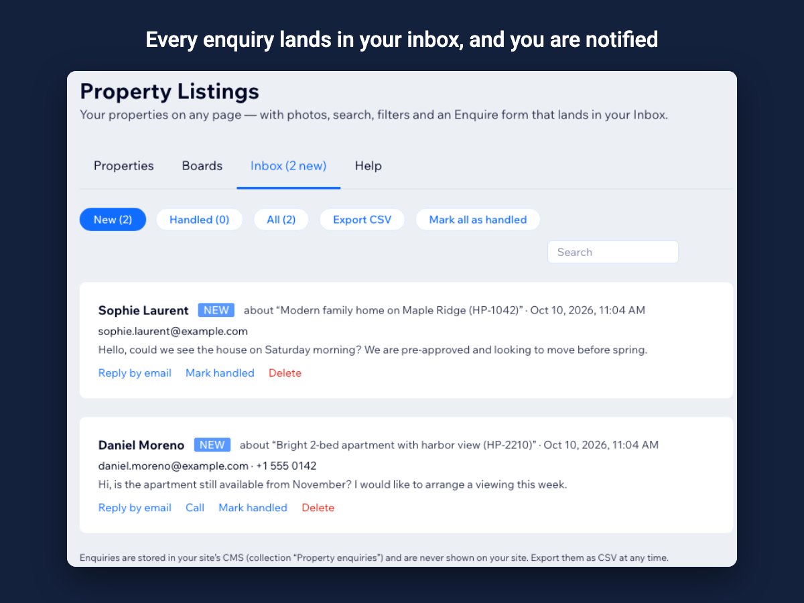

How to receive property enquiries on a Wix site
Most visitors to an agency site want to ask about one specific property. The easiest path to a lead is a short form right under that property, with the property already filled in.
The enquiry form
With Property Listings every property has an Enquire form: name, email, an optional phone number and a message that already names the property. Enquiries are stored in the Inbox tab of the app dashboard, where you can mark them handled or export them as CSV, and Wix notifies you of each new one.

Call, WhatsApp and email buttons
Some buyers prefer to call or message. Add your phone number, WhatsApp number (with its country code) and email address to a board, and the buttons appear next to the form on every property.
Spam and consent
The form has built-in spam protection and a daily limit per network. If your privacy policy requires it, add a consent line with a checkbox that visitors must tick before sending.
Questions
Do enquiries reach me by email?
Each enquiry is kept in the app dashboard and you receive a Wix notification; how notifications reach you (dashboard, Wix app, email) follows your Wix notification settings.
Can I turn the form off?
Yes. A board can show only the Call, WhatsApp and email buttons, or nothing at all.
See it in the Wix App Market